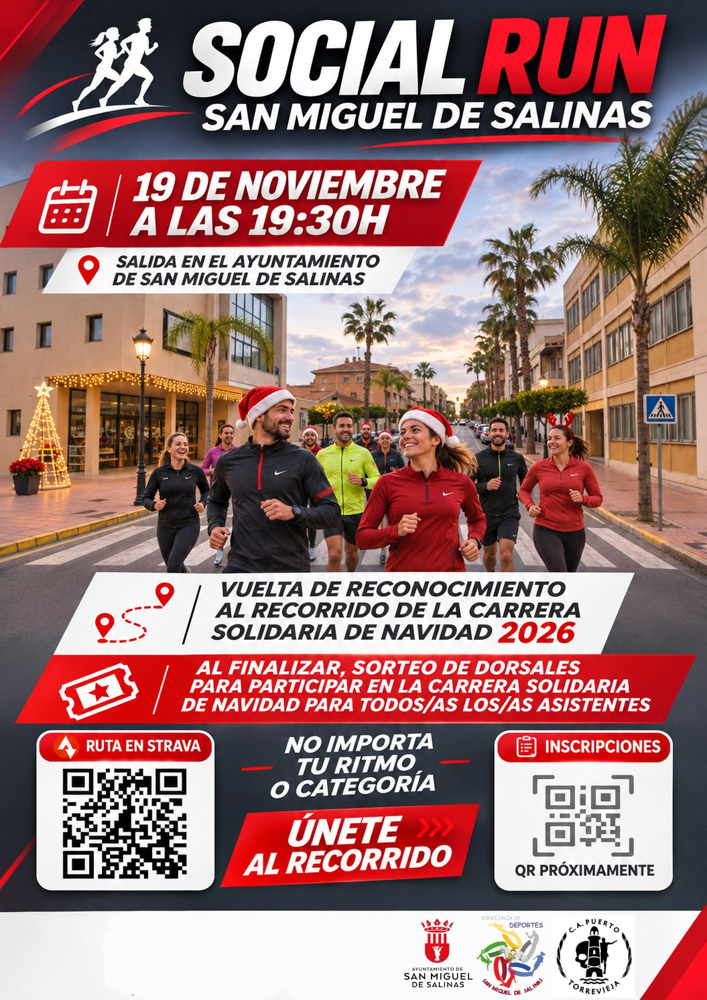
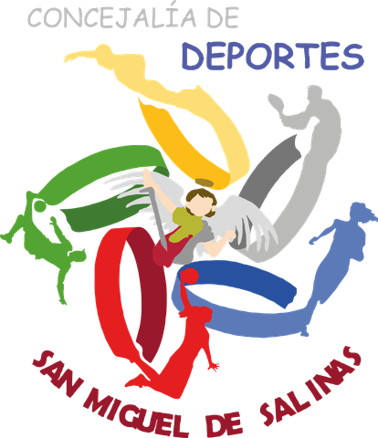

SocialRun
San Miguel de Salinas
Una vuelta en grupo al recorrido de la Carrera Solidaria de Navidad 2026, de noche y con las luces del pueblo encendidas. Sin cronómetro, sin clasificación y sin dejar a nadie atrás. Al llegar sorteamos 10 dorsales para la carrera del 20 de diciembre.
Salida desde el Ayuntamiento de San Miguel de Salinas
Salimos en

Cada inscripción enciende una luz
Las plazas son limitadas. Cuando la guirnalda esté entera, se cierran las inscripciones.
No importa tu ritmo
No hace falta haber corrido nunca. El grupo se organiza por ritmos y siempre hay alguien a tu paso. Elige el tuyo al inscribirte para que podamos organizarnos.
Paseo
Caminando a buen paso, charlando, conociendo el recorrido. Ideal si vienes con peques, si te estás iniciando o si quieres hacer la marcha de 2,5 km en diciembre.
CaminandoTrote
Corriendo suave, a ritmo de conversación. Si sales a correr de vez en cuando o estás preparando tu primer 5K, este es tu grupo.
Corriendo suaveRitmo de carrera
Para quien ya corre con regularidad y quiere probar el recorrido a ritmo, ver las curvas y saber dónde apretar el 20 de diciembre.
A ritmoLo único obligatorio: venir con ganas.
Así será la tarde
Una hora larga entre amigos, vecinos y gente que acabas de conocer.
- 19:15
Llegada
Nos vemos en la puerta del Ayuntamiento. Calentamos juntos y nos repartimos por ritmos.
- 19:30
Salida
Salimos todos a la vez. Cada grupo con su ritmo, con gente del C.A. Puerto Torrevieja acompañando.
- En ruta
El recorrido
Conocemos las calles por las que pasará la Carrera Solidaria de Navidad del 20 de diciembre.
- Meta
Sorteo
Al terminar sorteamos 10 dorsales para la carrera o la marcha entre los inscritos que hayan participado.
El recorrido
Es el mismo que el de la Carrera Solidaria de Navidad 2026. Hacerlo antes con el grupo es la mejor manera de llegar tranquilo el día de la carrera.
- Salida
- Ayuntamiento de San Miguel de Salinas
- Día
- Jueves 19 de noviembre de 2026
- Hora
- 19:30 h
- Precio
- Gratis
El recorrido en 3D se abre en Google Earth; en el móvil funciona mejor con la app instalada.
10 dorsales en juego
Al terminar la Social Run sorteamos 10 dorsales para la 5K Carrera o la 2,5K Marcha de Navidad Solidaria San Miguel de Salinas 2026, el domingo 20 de diciembre. Entran en el sorteo todas las personas inscritas que participen.
Ya tenemos ganadores
¡Enhorabuena! La organización se pondrá en contacto con cada persona ganadora.
¿No quieres esperar al sorteo? Puedes inscribirte ya en la carrera o la marcha desde su web.
Inscríbete
Gratis y en un minuto. Inscribirte nos ayuda a organizar los grupos y te da una papeleta para el sorteo de dorsales.
- Abierta a todas las edades y niveles
- Menores de 18: autorización firmada en PDF
- Menores de 14: acompañados de una persona adulta
- Una inscripción por persona
Mejor en compañía
¿Tienes a alguien que lleva tiempo diciendo que quiere empezar a correr? Esta es su tarde. Pásale la web o el cartel.

Organizan
